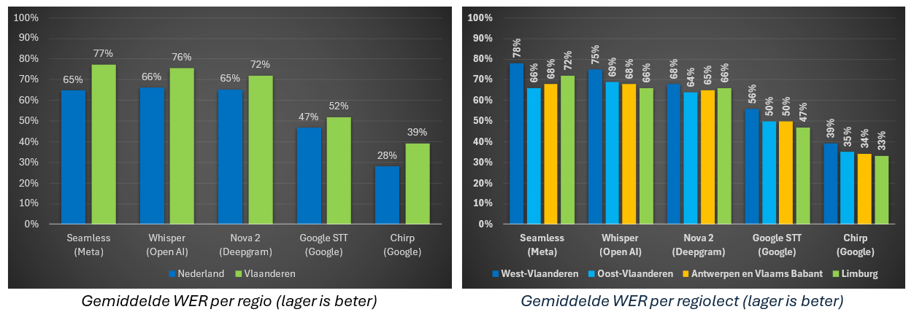

Inleiding
Spraakherkenning is cruciaal voor toepassingen zoals automatische ondertiteling en spraakgestuurde systemen (bijvoorbeeld de voice assistent in je auto of op je smartphone). Ondanks de snelle ontwikkeling van deze technologie blijft spraakherkenning een uitdaging voor minder voorkomende talen zoals het Nederlands. Regionale variaties van de taal zorgen bovendien voor een bijkomende complexiteit. In de praktijk vertaalt zich dat in frustraties bij gebruikers wanneer ze in het Vlaams hun systemen proberen te bedienen.
In zijn bachelorproef onderzocht Jens Coetsiers de prestaties van huidige spraakherkenningssystemen op de Vlaamse spreektaal om hun bruikbaarheid te beoordelen. Slagen huidige speech-to-text-modellen erin een dialoog tussen twee sprekers in het Vlaams voldoende accuraat om te zetten in geschreven taal? Hoe presteren de modellen voor het Vlaams vergeleken met het Nederlands? Zijn er significante verschillen in de transcriptie van Vlaamse standaardtaal en Vlaamse regiolecten? Welke tool komt als Vlaamse spraakherkenningskampioen uit de bus voor de gegeven casus?
Onderzoek
Op basis van een literatuurstudie werd een keuze gemaakt uit de beschikbare data die kon gebruikt worden om de onderzoeksvragen te beantwoorden. De specifieke casus die aanleiding gaf tot het onderzoek – nl. de vraag naar een spraakherkenningsmodel dat bruikbare transcripties oplevert voor Vlaamse één-op-ééngesprekken – was doorslaggevend voor de gemaakte keuzes.
Er werden twee datasets geselecteerd. Enerzijds gebruikte Jens de telefoondialogen en face-to-face-gesprekken uit de Corpus Gesproken Nederlands. Deze bevatten ongeveer 27 uur aan Nederlandse en Vlaamse audiodata van zowel voorbereide als spontane conversaties, ook in bepaalde regionale variaties (de zogenaamde Vlaamse tussentaal). Dit komt overeen met ongeveer 406.000 woorden. Deze gesprekken worden gekenmerkt door hun spontaniteit en indirect karakter. Anderzijds werden ook voor 4 uur aan geluidsfragmenten uit de corpus Variatie in Nederlandse Taal en Sprekers gebruikt (ongeveer 38.000 woorden), meer bepaald de set met betekenisvolle en met betekenisloze zinnen. De variatie in voorspelbaarheid van deze zinnen verhoogt hun meerwaarde voor het onderzoek. Belangrijk om op te merken is dat in beide datasets enkel één-op-ééngesprekken voorkomen en dat de geluidsfragmenten gekozen of aangepast werden zodat bepaalde verstoringen zoals ruis of slikken minder voorkwamen.
Om te bepalen hoe goed de modellen de audio kunnen omzetten naar tekst, werd de herkende tekst vergeleken met gecontroleerde transcripties die als gold standard gelden. Per fragment werd de zogenoemde Word Error Rate (WER) berekend. Dit is een relatieve weergave van het aantal foutief herkende woorden, waarbij bijgehouden wordt hoeveel woorden worden toegevoegd, weggelaten of aangepast in een automatische transcriptie ten opzichte van de controletranscriptie. De geteste geluidsfragmenten lieten zich opsplitsen in verschillende categorieën: Algemeen Nederlands, Vlaamse standaardtaal en Vlaamse tussentaal. Die laatste categorie werd verder opgesplitst volgens regio: West-Vlaanderen, Oost-Vlaanderen, Antwerpen en Vlaams-Brabant, en Limburg. Per categorie werd vervolgens de gemiddelde WER berekend. Algemeen wordt aangenomen dat een WER van 5% tot 10% goed en van 10% tot 20% acceptabel is. Een nadeel van de gevolgde werkwijze is dat deze maat nogal streng wordt toegepast. Zo wordt bijvoorbeeld “er op” niet als correcte weergave van het tussentalige “d’rop” beschouwd. Ook worden modellen die getallen in cijfers weergeven benadeeld, aangezien de correcte tekst de getallen als voluit geschreven woorden bevat.
Naast de keuze voor de testdata, werd ook een selectie gemaakt van de meest veelbelovende spraakmodellen voor de gegeven casus. Mee bepalend voor de keuze waren criteria zoals de mogelijkheid om Nederlandstalige audio te transcriberen – niet alle publiek beschikbare modellen kunnen dit – en het bijhorende prijskaartje. In de studie werden uiteindelijk SeamlessM4T-v2 (van Meta), Whisper Large-v3 (OpenAI), Nova-2 (Deepgram), Google STT (Google) en Chirp (Google) met elkaar vergeleken. Dit zijn allemaal zogenaamde multilinguale (meertalige) modellen. Daarom is het belangrijk om te weten op basis van welke (Nederlandstalige) data deze modellen getraind werden. Volgens de beschikbare documentatie werd Seamless getraind op 6363 uren en Whisper 2077 uren aan Nederlandse tekst (geen Vlaams). Voor de andere modellen is geen precieze informatie over specifieke Nederlandstalige training van de modellen bekend.
Resultaten

Bovenstaande grafieken tonen dat de onderzochte spraakmodellen niet goed presteren op Nederlandstalige audiofragmenten, met een gemiddelde WER tot 77%! Voorts valt op dat de WER voor Vlaamse fragmenten consistent hoger ligt dan voor Nederlandse (uit Nederland), met verschillen tussen de 5 en 12 procentpunten. Dat betekent dus dat de modellen slechter presteren op Vlaamse audio. Als we verder inzoomen op regionale verschillen in Vlaanderen, stellen we vast dat de geteste spraakherkenningsmodellen het meeste moeite hebben met West-Vlaamse fragmenten. Het model dat het beste presteert voor Vlaamse spraakherkenning is Chirp van Google.
Wat betekenen deze resultaten nu concreet voor de bruikbaarheid van huidige state-of-the-art spraakherkenningsmodellen voor het Vlaams? In ieder geval maakt dit onderzoek duidelijk dat de technologie nog geen echt bruikbare herkenning van Vlaamse (tussen)taal oplevert. Betekent dit dat we gewoon moeten wachten tot er betere modellen op de markt komen? Niet noodzakelijk. Zo is het – zonder te technisch te willen worden – mogelijk om bestaande taalmodellen te verbeteren voor specifieke doeleinden zonder ze volledig opnieuw te moeten trainen. Dit proces heet finetunen en is bijvoorbeeld mogelijk wanneer de broncode van de modellen die we willen verbeteren beschikbaar is. Van de geteste modellen in het onderzoek zijn Seamless van Meta en Whisper van OpenAI open source en dus modellen die in aanmerking komen om te finetunen. Een eerste poging om Whisper te finetunen specifiek voor de Vlaamse taal leverde alvast een substantiële verbetering op: de WER verminderde van 76% tot 52%. Dit is niet helemaal verrassend aangezien er voor Whisper in de trainingsfase geen gebruik gemaakt werd van Vlaamse trainingsdata. Toch valt op dat zelfs deze verbetering niet genoeg is om Chirp van Google als Nederlandse spraakherkenningskampioen van de troon te stoten.